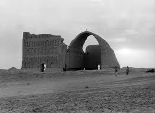

Kerbala
La ciudad, mejor conocida como la ubicación de la Batalla de Karbala en 680 CE , o los santuarios del Imam Husayn y Abbas , [8] [9] es considerada una ciudad santa para los musulmanes chiítas de la misma manera que La Meca , Medina y Jerusalén . Decenas de millones de musulmanes chiítas visitan el sitio dos veces al año, rivalizando con La Meca como un lugar de peregrinación.

Valeria: Hermoso lugar en la tierra, si no has visitado Roza e Imam Hussain no hemos visitado nada en el mundo. Hermosa arquitectura con oro plata y trabajo de vidrio.
La mezquita Imam Husayn también llamada santuario de Husayn ibn ‘Alī es una importante mezquita de Irak, una de las mezquitas más antiguas del mundo y lugar de peregrinación para los musulmanes chiíes
En Santuario Al-Abbas es el mausoleo de ‘Abbās ibn‘ Alī y una mezquita, ubicada cerca de la Mezquita Imām Ḥusayn en Karbalā, Iraq. B Abbās era hijo de Ali ibn Abi Talib y el medio hermano de Hasan y Ḥusayn. Era el abanderado de ayusayn en la Batalla de Karbalā y el jefe de sus caravanas.
Al abbas holy shrine Diseños increíbles obras de arte gran construcción interesante una sensación de paz y tranquilidad cuando uno entra en las puertas para respetar. Algunos lo de la sensación indescriptible en general. verdaderamente un lugar bendecido
Memory Islam Museum está situado en carretera de Bagdad Karbala 12 minutos caminando desde el santuario al Abbas. El museo es parecido a un incidentes clave en la historia islámica mediante la creación artificial.
El Taq-i Kisra es un monumento persa en Al-Mada'in, único resto visible de la antigua ciudad de Ctesifonte. Se halla cerca de la actual Salman Pak, Irak.
